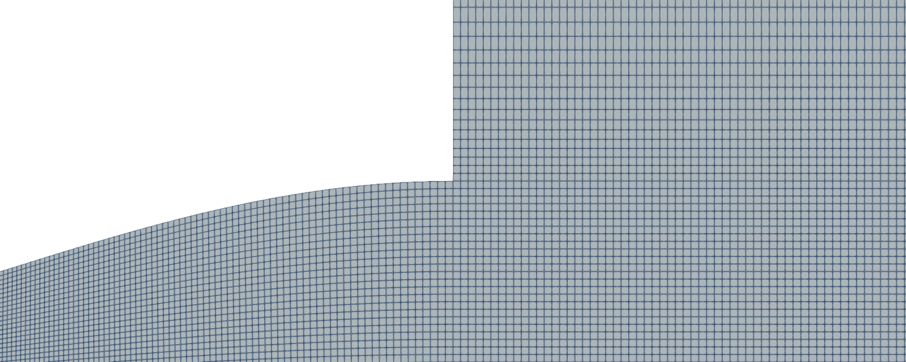
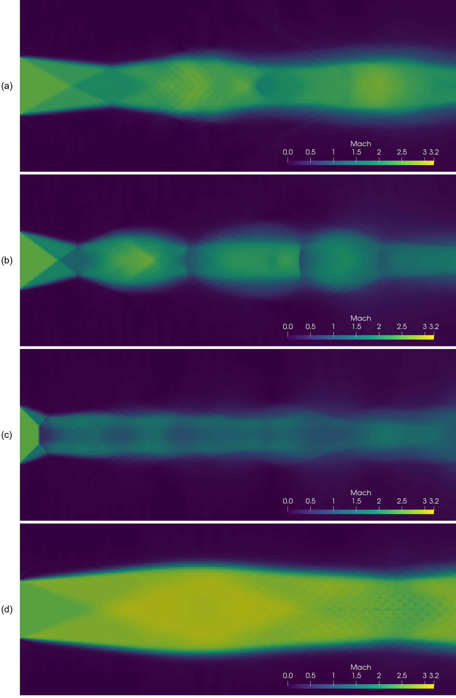
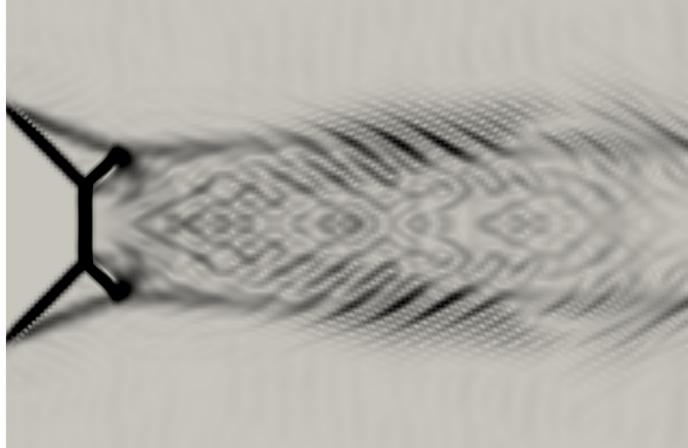
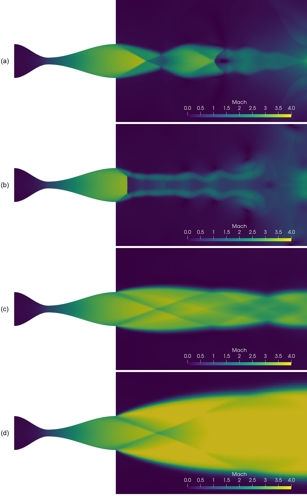

Outside the nozzle the jet has to match the ambient pressure, and the waves that do it start at the lip. With a uniform exit their angles follow theory, and even the Mach disk appears where predicted. With the real nozzle the same comparison shows why «overexpanded» depends on where you look.
OpenFOAM · Flujo compresible · Tutorial 1.3
La tobera convergente-divergente con descarga
Afuera de la tobera el chorro tiene que igualar la presión del ambiente, y las ondas que lo hacen nacen en el labio. Con una salida uniforme sus ángulos siguen la teoría, y hasta el disco de Mach aparece donde se predice. Con la tobera real, la misma comparación muestra por qué «sobreexpandida» depende de dónde se mire.
OpenFOAM · Kompressible Strömung · Tutorial 1.3
Die Laval-Düse mit Austrittsstrahl
Außerhalb der Düse muss der Strahl den Umgebungsdruck erreichen, und die Wellen, die das leisten, entstehen an der Lippe. Bei gleichförmigem Austritt folgen ihre Winkel der Theorie, und sogar die Mach-Scheibe erscheint am vorhergesagten Ort. Mit der realen Düse zeigt derselbe Vergleich, warum „überexpandiert“ davon abhängt, wo man hinschaut.
Estimated reading: 60 min (63 min of computing)Lectura estimada: 60 min (63 min de cálculo)Lesedauer: ca. 60 min (63 min Rechenzeit)Level: undergraduateNivel: licenciaturaNiveau: BachelorVerified on OpenFOAM 12 (blueCFD-Core 2024), Gmsh 4.15.2 and ParaView 5.11.2Verificado en OpenFOAM 12 (blueCFD-Core 2024), Gmsh 4.15.2 y ParaView 5.11.2Geprüft mit OpenFOAM 12 (blueCFD-Core 2024), Gmsh 4.15.2 und ParaView 5.11.2
Full English translation in preparation. Each section below carries a summary of its content; the complete text, figures and tables are available in the Spanish version, which the ES button above selects.
Tell an overexpanded nozzle from an underexpanded one and say which wave leaves the lip in each case; compute the oblique-shock angle and the head and tail of the Prandtl-Meyer fan from the pressure ratio; measure those angles in an OpenFOAM field with a short script; predict when a Mach disk appears; and explain why, in a cosine nozzle, «overexpanded» depends on where you look.
The problem
What is simulated
Two domains: a jet alone with a uniform inlet at the exit plane (Mach 2.5, p1/p0 = 0.05), where theory has a single starting state, and the nozzle of tutorial 1.2 with the ambient downstream of it.
The theory
Overexpanded, underexpanded and the Mach disk
With pb > p1 an oblique shock leaves the lip; with pb < p1, a Prandtl-Meyer fan. The jet boundary reflects each wave with the opposite sign, which gives the diamond pattern. The regular reflection on the axis needs the turn behind the lip shock to stay below the maximum of an attached shock at M2: with M1 = 2.5 that fails at pb/p1 = 2.89, and a Mach disk appears.
Step by step
Eight cases with one script
In the blueCFD-Core terminal: unzip tobera-con-descarga.zip, copy it once per case, run ./Allrun uniforme M1 P1 PB or ./Allrun tobera PB, then python3 validar.py. A uniform jet takes about 4 minutes and a nozzle case about 12 on a laptop; each uses one core.
The case
The case, file by file
The same tobera.geo with chorro = 1 or 2; a farField boundary with totalPressure, through which the jet entrains ambient gas; three shorter stages; and sixty vertical lines from which validar.py takes the wave positions: the centroid of the pressure gradient for the shock, 3 %% thresholds for the fan.
Results
The uniform jets in ParaView
The Mach field of the four uniform jets: lip shock and its reflection, the Mach disk at pb/p1 = 3.5, the fan at 0.7. Far from the exit the jet is unsteady and depends on the mesh.
Worked example
The uniform jets against the theory
The shock angle is 29.4° against 28.6° at pb/p1 = 1.5, with a bias that shrinks with the mesh; head and tail of the fan agree within 0.3°; and the Mach disk appears between pb/p1 = 2.8 and 2.9, where theory puts it.
The real nozzle
When the exit is not uniform
The exit pressure goes from 0.015 on the axis to 0.048 at the lip, so the design pressure leaves the core overexpanded and the periphery underexpanded. The lip waves leave the single-state theory by about +2° and −3°, the Mach disk appears much earlier, and a compression wave from the end of the cosine contour crosses the axis at x ≈ 8.2 m whatever the ambient pressure.
Common errors
What goes wrong, and what OpenFOAM says
pb/p1 = 5 and 0.15 stop with a floating-point exception; using the mean design state instead of the state at the lip; reading the tail of a strong fan; and comparing the far field.
Suggested exercise
Another Mach number and the Mach disk
Run the uniform jet at Mach 2 and 3 with pb/p1 = 1.5, and bracket the Mach disk at Mach 2.
Appendix
From the pressure ratio to the angles
The worked numbers for the shock at pb/p1 = 1.5, the fan at 0.7 and the limit of regular reflection.
Sources
References
Anderson's Modern Compressible Flow and NACA Report 1135 for the theory; Hornung and Ben-Dor for shock reflection; the OpenFOAM 12 sources and the Kurganov-Tadmor paper for the numerics.
Objetivos de aprendizaje
Qué se debe poder hacer al terminar
La 1.2 terminó en el plano de salida de la tobera, y dejó dos regímenes sin explicar: por debajo de \(p_{II}\), dentro de la tobera el flujo es el mismo con cualquier presión de descarga. La diferencia entre la presión con la que sale el gas y la del ambiente se arregla afuera, con ondas que nacen en el labio de la salida. Esta guía extiende el dominio hacia el ambiente, primero con un chorro de salida uniforme, donde la teoría acierta, y después con la tobera real, donde deja de bastar.
Distinguir una tobera sobreexpandida de una subexpandida, y decir qué onda sale del labio en cada caso.
Calcular el ángulo del choque oblicuo y los de la cabeza y la cola del abanico de Prandtl-Meyer a partir de \(p_b/p_1\).
Medir esos ángulos en un campo de OpenFOAM con un guion de Python, y explicar por qué la posición de una onda se toma con un centroide y no con el máximo.
Predecir cuándo aparece un disco de Mach en el eje, y comprobarlo.
Explicar por qué, en una tobera cosenoidal, «sobreexpandida» depende de dónde se mire.
Qué hace falta. Lo mismo que en la 1.2: blueCFD-Core 2024 (OpenFOAM 12 para Windows, con ParaView 5.11.2) y Gmsh 4.15.2 en C:\gmsh-4.15.2-Windows64. El caso es tobera-con-descarga.zip. Conviene haber hecho la 1.2 y la 1.1, de la que salen el choque oblicuo y el abanico. Los ocho casos, uno detrás de otro, tardan unos 63 minutos en la laptop de la serie; cada uno usa un núcleo, así que se pueden correr varios a la vez en terminales distintas. La malla con descarga se construye con los botones en el 2.3.1 de Gmsh; aquí el .geo viene en el caso.
El problema
Qué se va a simular
El gas sale de la tobera a un ambiente en reposo a presión \(p_b\). Para ver las ondas sin que nada las contamine, la guía resuelve dos dominios (figura 1):
El chorro de salida uniforme. Sólo el exterior, con la entrada en el plano de salida: Mach \(M_1\) = 2.5 y presión \(p_1/p_0\) = 0.05, iguales en toda la altura, como en una tobera ideal. Aquí la teoría tiene un solo estado de partida y se puede comparar número por número.
La tobera real. La tobera de la 1.2, con el ambiente a su salida. Aquí la salida no es uniforme.
Figura 1.Los dos dominios. En azul claro, todo lo que se calcula con la tobera: del depósito hasta 16 m aguas abajo de la salida. El chorro solo es lo que queda a la derecha de \(x\) = 6, con la entrada en la línea punteada: la salida de una tobera ideal, uniforme. Se calcula sólo la mitad de arriba; el eje es un plano de simetría.
Dato
Valor
Dónde se fija
Tobera
\(A_e/A_t\) = 5, \(H_e\) = 1 m, salida en \(x\) = 6 m
Tabla 1.Datos de los dos dominios. La tobera es la de la 1.2; las longitudes del chorro están en tobera.geo.
La pregunta de esta guía: ¿los ángulos de las ondas del labio son los de la teoría, y qué parte de esa respuesta sobrevive cuando la salida deja de ser uniforme?
La teoría
Sobreexpandida, subexpandida y el disco de Mach
El gas llega al labio con presión \(p_1\) y Mach \(M_1\), y afuera la presión es \(p_b\). El borde del chorro separa gas en movimiento de gas en reposo, y a través de él la presión tiene que ser la misma. Si \(p_1\) no es \(p_b\), una onda que nace en el labio hace el ajuste (figura 2). Las ecuaciones son las de la 1.1; lo nuevo es que el dato ya no es el ángulo de la pared, sino la razón de presiones.
Figura 2.Las ondas del labio. (a) Con \(p_b/p_1\) = 1.5, el choque oblicuo sube la presión del chorro a \(p_b\) y gira el flujo hacia el eje. (b) Con \(p_b/p_1\) = 0.7, el abanico la baja a \(p_b\) y gira el flujo hacia afuera. En los dos casos el borde del chorro es una frontera a presión \(p_b\), y la línea negra sigue la dirección del flujo detrás de la onda.
Sobreexpandida, \(p_b > p_1\): un choque oblicuo
La tobera expandió el gas de más, y el gas tiene que subir a \(p_b\). Un choque oblicuo que sale del labio lo hace. Con la razón de presiones se obtiene directamente el Mach normal al choque, y de ahí el ángulo β:
Subexpandida, \(p_b < p_1\): un abanico de Prandtl-Meyer
Al gas todavía le sobra presión y sigue expandiéndose afuera. El abanico es isentrópico, así que el Mach de atrás sale de la presión, y el giro, de la función de Prandtl-Meyer:
El flujo gira hacia afuera. La cabeza del abanico viaja con el ángulo de Mach del flujo que llega; la cola, con el del flujo que sale, medido desde su nueva dirección:
La onda del labio llega al eje y se refleja; la reflejada llega al borde del chorro, que es una frontera a presión constante. Ahí una onda se refleja con el signo contrario: un choque regresa como expansión y una expansión, como compresión. Por eso el chorro se angosta y se abre una y otra vez, con el patrón de «diamantes» de las fotografías de escapes de cohetes.
El disco de Mach
Detrás del choque del labio el flujo va hacia el eje, con el ángulo θ. Para seguir paralelo al eje, tiene que girar θ de regreso con un segundo choque, el reflejado. Eso sólo es posible si θ no pasa del giro máximo que admite un choque adherido con el Mach \(M_2\):
Cuando la condición (6) falla, la reflexión regular es imposible, y aparece un choque casi normal cerca del eje, el disco de Mach, unido al choque del labio en un punto triple. Con \(M_1\) = 2.5, la desigualdad (6) deja de cumplirse en \(p_b/p_1\) = 2.89 (el Apéndice hace la cuenta). La teoría de reflexiones tiene un segundo criterio, el de von Neumann, que da 2.83: entre los dos valores pueden existir las dos reflexiones (Hornung, 1986; Ben-Dor, 2007).
La tobera real
Con la tobera de la 1.2, el régimen depende de cómo se compare \(p_b\) con la presión de salida (tabla 2). Para una salida uniforme esa comparación sería una sola; aquí no.
\(p_b/p_0\)
Qué pasa
Caso de la guía
mayor que 0.243 (\(p_{II}\))
el choque entra a la tobera: el régimen de la 1.2
—
de 0.048 a 0.243
sobreexpandida en toda la salida: choques oblicuos en el labio
sobre075, sobre120
de 0.0154 a 0.048
el núcleo sobreexpandido y la periferia subexpandida, a la vez
adaptada
menor que 0.0154
subexpandida en toda la salida: abanico en el labio
sub010
Tabla 2.Los regímenes de la tobera con el ambiente. Las presiones \(p_{II}\) y \(p_{III}\) son las de la 1.2. Las dos últimas filas no están en la teoría cuasi-unidimensional: la sección de salida de la tobera cosenoidal no es uniforme, y la presión de salida va de 0.0154 en el eje a 0.048 junto al labio.
Paso a paso
Ocho casos con un guion
Todo se hace en la terminal de blueCFD-Core, como en la 1.2. Cada caso va en su propia copia de la carpeta.
Carpeta
Orden
\(p_b/p_1\)
Qué se espera
Tiempo
uniforme15
./Allrun uniforme 2.5 0.05 0.075
1.5
choque oblicuo, β = 28.6°
4 min
uniforme24
./Allrun uniforme 2.5 0.05 0.12
2.4
choque oblicuo, β = 36.4°
4 min
uniforme35
./Allrun uniforme 2.5 0.05 0.175
3.5
choque oblicuo, β = 45.2°, con disco de Mach
4 min
uniforme07
./Allrun uniforme 2.5 0.05 0.035
0.7
abanico, cabeza a 23.6° y cola a 16.3°
4 min
sobre075
./Allrun tobera 0.075
1.56
sobreexpandida en toda la salida
12 min
sobre120
./Allrun tobera 0.12
2.49
sobreexpandida, más fuerte
12 min
adaptada
./Allrun tobera 0.020993
0.44
\(p_b = p_{III}\): adaptada sólo en promedio
12 min
sub010
./Allrun tobera 0.01
0.21
subexpandida en toda la salida
12 min
Tabla 3.Los ocho casos de la receta. Cada uno en su copia de la carpeta. Los tiempos son de la laptop de la serie, con un caso a la vez; cada caso usa un núcleo, así que varios pueden correr al mismo tiempo en terminales distintas, un poco más lentos.
Descomprimir el caso en la carpeta Descargas: queda una carpeta tobera-con-descarga con los archivos de la tabla 4.
Abrir la terminal y agregar Gmsh a la ruta de búsqueda:
export PATH="$PATH:/c/gmsh-4.15.2-Windows64"
Hacer una copia por caso en la carpeta de corridas, con el nombre de usuario de cada quien en lugar de ana:
cd $FOAM_RUN/uniforme15
./Allrun uniforme 2.5 0.05 0.075
Los tres números son \(M_1\), \(p_1/p_0\) y \(p_b/p_0\): aquí \(p_b/p_1\) = 1.5. El guion hace la malla, la convierte y la revisa, prepara el arranque, corre shockFluid en tres etapas y hace los muestreos (sección El caso). Responde, con la ruta completa en lugar de …:
Running gmshToFoam on …/uniforme15
Running checkMesh on …/uniforme15
Running setFields on …/uniforme15
Running foamRun on …/uniforme15
Running foamRun on …/uniforme15
Running foamRun on …/uniforme15
Running foamPostProcess on …/uniforme15
Running foamPostProcess on …/uniforme15
Terminado. Siguiente paso: python3 validar.py
Tardó 3.5 minutos. Si algún programa falla, el guion se detiene y dice qué archivo log.* leer.
Compararlo con la teoría:
python3 validar.py
Responde:
Chorro uniforme: M1 = 2.5, p1 = 0.05, pb = 0.075 (pb/p1 = 1.5)
OpenFOAM teoría dif.
β del choque, con el flujo que llega 29.4° 28.6° +0.8°
ángulo del flujo detrás, con el eje -6.5° -6.4° -0.2°
Mach detrás del choque 2.222 2.236 -0.6 %
presión detrás del choque 0.076 0.075 +1.0 %
(ajuste de x = 6.10 a 6.90, desviación 0.006 m)
Hasta x = 8 el Mach medio del eje no baja de 1: reflexión regular.
Los otros tres chorros uniformes, cada uno en su carpeta y con su orden de la tabla 3.
La tobera real. Con la palabra tobera, el único número es \(p_b/p_0\):
cd $FOAM_RUN/sobre075
./Allrun tobera 0.075
python3 validar.py
Tardó 12 minutos. Los otros tres casos son iguales, con su presión.
Ver los resultados:paraFoam en la carpeta de cada caso (sección Resultados).
Para repetir un caso en la misma carpeta, primero ./Allclean. Sin argumentos, ./Allrun escribe cómo se usa.
El caso
El caso, archivo por archivo
El gas, Euler, los esquemas numéricos y shockFluid son los de la 1.1 y la 1.2. Lo nuevo es el dominio exterior, sus fronteras y la manera de medir las ondas.
Archivo
Qué es
tobera.geo
el mismo de la 1.2; con chorro = 1 agrega el ambiente y con 2 deja sólo el chorro
Allrun, Allclean
el guion de los dos dominios y el que deja la carpeta como nueva
validar.py
mide las ondas y las compara con la teoría; sólo usa la biblioteca estándar de Python
0.uniforme/, 0.tobera/
las condiciones de frontera de cada dominio
constant/
el gas normalizado y Euler, como en la 1.1 y la 1.2
system/setFieldsDict.uniforme, .tobera
el arranque de cada dominio
solvers/shockFluid/
controlDict, fvSchemes y fvSolution; el Allrun los copia a system/
system/eje, ejeMedio, ondas, presiones
los muestreos: el eje, sesenta rectas verticales con la sección de salida, y cinco sondas
Tabla 4.Los archivos de tobera-con-descarga.zip. Lo que el Allrun genera (la malla, 0/, los diccionarios de system/ y los resultados) lo borra ./Allclean.
La geometría: tobera.geo
Es el archivo de la 1.2. Con chorro = 1 agrega dos bloques después de la salida, el núcleo del chorro (a la altura de la salida) y el ambiente (de ahí hacia arriba); con chorro = 2 deja sólo esos dos, y la entrada queda en el plano de salida. El Allrun pasa el valor con -setnumber chorro. El núcleo conserva celdas de 33 mm en \(y\) para resolver las ondas, y el ambiente crece de 33 mm en el labio a 250 mm en el borde (figura 3).

Figura 3.La malla en el labio. De \(x\) ≈ 4 a 8 m. A la izquierda, el divergente; a la derecha, el núcleo del chorro, que conserva las celdas de la salida en \(y\); arriba, el ambiente, cuyas celdas crecen hacia el borde del dominio.
Las fronteras
El archivo 0.uniforme/p:
boundaryField
{
inlet
{
type fixedValue;
value uniform P1;
}
outlet
{
type waveTransmissive;
field p;
psi psi;
gamma 1.4;
fieldInf PB;
lInf 1;
value uniform PB;
}
farField
{
type totalPressure;
rho none;
psi psi;
gamma 1.4;
p0 uniform PB;
value uniform PB;
}
axis
{
type symmetryPlane;
}
frontAndBack
{
type empty;
}
}
La entrada del chorro uniforme es supersónica, así que todo se impone: \(p_1\) aquí, \(U_1\) y \(T_1\) en 0.uniforme/U y 0.uniforme/T. P1, PB, UX y T1 son marcas que el Allrun reemplaza. En la carpeta 0.tobera la entrada es la del depósito de la 1.2, y aparece la pared.
La frontera nueva es farField, el labio exterior y el techo del dominio. El chorro arrastra gas del ambiente, de modo que por ahí puede entrar: con totalPressure, el gas que entra llega en reposo a presión \(p_b\), y la velocidad pressureInletOutletVelocity se ajusta a lo que haga falta. En la salida del dominio, waveTransmissive lleva la presión hacia \(p_b\) y deja salir las ondas, como en la 1.2. La validación repitió el caso con el techo al doble de altura, a 12 \(H_e\): los ángulos cambiaron 0.1° o menos.
El arranque
El archivo system/setFieldsDict.uniforme:
defaultFieldValues
(
volVectorFieldValue U (0 0 0)
volScalarFieldValue T 1
volScalarFieldValue p PB
);
regions
(
boxToCell
{
box (5.9 -1 -10) (30 1 10);
fieldValues
(
volScalarFieldValue p P1
volVectorFieldValue U (UX 0 0)
volScalarFieldValue T T1
);
}
);
Todo el dominio arranca en reposo a \(p_b\), salvo el núcleo del chorro, que arranca con el estado de la entrada: el chorro ya existe desde el primer paso, en lugar de abrirse paso a través del ambiente. En setFieldsDict.tobera, como en la 1.2, el convergente arranca a la presión de remanso.
Tres etapas otra vez
Las mismas de la 1.2, más cortas, porque aquí no hay una onda atrapada en el convergente: hasta \(t\) = 20 con primer orden, hasta 40 con segundo orden y hasta 60 promediando \(p\), \(U\) y \(T\). La figura 4 muestra por qué hacen falta los promedios, y también lo que no arreglan.
Figura 4.Cuándo se estabiliza la corrida. Presión en las sondas de system/presiones del caso uniforme15. Las dos primeras, en el primer tramo del chorro, llegan a su valor en la etapa 1 y ahí se quedan: 0.050, la de la entrada, y 0.075, la de detrás del choque. Más lejos del labio, las sondas siguen moviéndose ±0.01 a ±0.03 hasta el final: esa parte del chorro no es estacionaria. Por eso validar.py mide en el primer metro y en el eje hasta \(x\) = 8 m.
Las ondas: de los campos a los ángulos
El archivo system/ondas:
// Campos promediados en sesenta rectas verticales, cada 0.05 m desde x = 6.05 hasta x = 9, del eje a y = 3: de ahí
// validar.py saca la posición de las ondas. La recta salida, en x = 5.99, es la sección de salida de la tobera.
type sets;
libs ("libsampling.so");
writeControl writeTime;
interpolationScheme cellPoint;
setFormat raw;
fields (pMean TMean UMean);
sets
(
salida { type lineUniform; axis y; start (5.99 0.0005 0.05); end (5.99 0.9995 0.05); nPoints 400; }
x000 { type lineUniform; axis y; start (6.05 0.0005 0.05); end (6.05 3 0.05); nPoints 1200; }
x001 { type lineUniform; axis y; start (6.10 0.0005 0.05); end (6.10 3 0.05); nPoints 1200; }
(y así hasta x059, en \(x\) = 9). Sesenta rectas verticales, cada 0.05 m, con 1200 puntos cada una, y la sección de salida de la tobera. En cada recta validar.py busca la onda, y con las posiciones ajusta una recta por mínimos cuadrados, cuya pendiente da el ángulo:
El choque es el máximo del gradiente de presión \(\partial p/\partial y\). Pero el máximo salta de celda en celda: con él, el ajuste dejaba errores de hasta 0.14 m y el ángulo se movía 2°. Por eso la posición es el centroide del gradiente alrededor del máximo, \(\sum y_i g_i / \sum g_i\), que varía suavemente: la desviación del ajuste baja a 2–9 mm, una fracción de celda.
El abanico no tiene un pico: la presión cae de manera continua. La cabeza es el punto donde \(p\) ha caído 3 % del salto total, y la cola, donde le falta 3 % para llegar a \(p_b\).
El ajuste usa sólo el primer metro, de \(x\) = 6.1 a 6.9 m, antes de que la onda reflejada contamine el resultado. Si hay disco de Mach, el centroide salta al disco en el punto triple, y el ajuste termina ahí.
Resultados
Los chorros uniformes en ParaView
ParaView se abre con paraFoam en la carpeta de cada caso, como en la 1.2: Apply, el último tiempo, la vista −Z y el campo Ma; Filters ▸ Alphabetical ▸ Reflect con Plane en Y Min refleja la mitad calculada sobre el eje.

Figura 5.Los cuatro chorros uniformes. Número de Mach del último tiempo, reflejado sobre el eje, con la misma escala: (a) \(p_b/p_1\) = 1.5, (b) 2.4, (c) 3.5 y (d) 0.7.
La figura 5 tiene los cuatro chorros uniformes. En (a) y (b), el choque del labio cruza hacia el eje y se refleja; detrás del segundo choque el Mach es menor, y al llegar al borde el choque se refleja como expansión. El chorro se angosta primero y luego se abre: sobreexpandido. En (b), con el choque más fuerte, el borde se dobla más. En (c) la reflexión regular ya no es posible, y el disco de Mach corta el núcleo del chorro cerca de la salida: detrás de él el gas es subsónico. En (d), al revés que en los otros tres, el chorro se abre primero, porque el abanico gira el flujo hacia afuera.
Las fotografías de chorros supersónicos se toman con la técnica schlieren, que hace visible el gradiente de densidad. En ParaView se puede obtener lo mismo con tres filtros en cadena: Cell Data to Point Data; Gradient, con rho como campo; y Calculator, con la función sqrt(Gradient_X^2+Gradient_Y^2). Después, Reflect y el mapa de color X Ray, con la escala de 0 a 1.5 (figura 6). Las ondas de la figura 2 se ven de una sola mirada.

Figura 6.El «schlieren» numérico. Magnitud del gradiente de densidad de uniforme35, reflejada sobre el eje, de \(x\) = 6 m a casi 12 m. El choque del labio baja hasta el punto triple; ahí se unen el disco de Mach, casi vertical, y el choque reflejado, que sigue hacia el borde del chorro. Las rayas finas de la derecha, del tamaño de una celda, no son física: es el ruido de la capa de corte en esta malla.
Lejos de la salida el patrón deja de ser ordenado. Ma es el campo instantáneo del último tiempo, y esa parte del chorro no es estacionaria (figura 4): sin viscosidad, el borde del chorro es una capa de corte que se ondula, y lo único que la amortigua es la disipación numérica. Esa región depende de la malla y no se compara con nada en esta guía.
Ejemplo resuelto
Los chorros uniformes contra la teoría
Enunciado: con los cuatro chorros uniformes de la receta, comprobar el ángulo del choque oblicuo y los del abanico contra las ecuaciones (1) a (5), y encontrar entre qué presiones aparece el disco de Mach.
1. El choque oblicuo
\(p_b/p_1\)
β OpenFOAM
β teoría
Dif.
Flujo detrás
Teoría
\(M_2\)
Teoría
1.5
29.4°
28.6°
+0.8°
−6.5°
−6.4°
2.222
2.236
2.4
36.9°
36.4°
+0.5°
−14.6°
−14.5°
1.898
1.896
3.5
45.6°
45.2°
+0.5°
−21.6°
−21.7°
1.572
1.563
Tabla 5.Los choques del labio contra la teoría. La salida de validar.py de cada caso, con \(M_1\) = 2.5. β se mide con la dirección del flujo que llega; el ángulo del flujo detrás, con el eje \(x\). Con \(p_b/p_1\) = 3.5 el ajuste termina en el punto triple.
β queda +0.5° a +0.8° de la teoría, siempre arriba (tabla 5); la dirección del flujo detrás del choque, a 0.2° o menos, y el Mach, a menos de 1 %. El choque ocupa tres o cuatro celdas, y cerca del labio esa mancha sesga la posición. La prueba de que el sesgo es numérico es que cambia con la malla (tabla 6): con cada refinamiento β se acerca a la teoría, y la extrapolación de Richardson queda a 0.25° de ella.
Cifra
\(n_R\) = 15
\(n_R\) = 30
\(n_R\) = 60
Richardson
Teoría
β, \(p_b/p_1\) = 1.5
29.95°
29.35°
29.07°
28.81°
28.56°
cabeza, \(p_b/p_1\) = 0.7
24.24°
23.72°
23.47°
23.22°
23.58°
cola, \(p_b/p_1\) = 0.7
17.26°
16.09°
15.87°
15.82°
16.32°
Tabla 6.Los ángulos con tres mallas. \(n_R\) es el número de celdas en la semialtura de la salida; las celdas del chorro y del ambiente se escalan con él. Corridas de la validación; la extrapolación es de Richardson, como en el 1.1.
2. El abanico
\(p_b/p_1\)
Cabeza OpenFOAM
Teoría
Cola OpenFOAM
Teoría
Flujo detrás
Teoría
0.7
23.7°
23.6°
16.1°
16.3°
5.7°
5.2°
0.3
23.0°
23.6°
3.8°
1.6°
16.6°
16.0°
Tabla 7.El abanico del labio contra la teoría. La salida de validar.py con \(p_b/p_1\) = 0.7. Los ángulos son con el eje \(x\). El renglón de \(p_b/p_1\) = 0.3 es de la práctica sugerida: la cola de un abanico fuerte no se mide bien.
Con \(p_b/p_1\) = 0.7, la cabeza y la cola coinciden con la teoría dentro de 0.3° (tabla 7). Con la malla los dos ángulos siguen bajando y cruzan la teoría: la tabla 6 los extrapola a 0.4° y 0.5° por debajo. Un abanico no tiene un borde nítido, y el umbral de 3 % es una definición: estas cifras se leen con ±0.5°. La figura 7 pone los dos resultados en todo el intervalo: es la curva completa de la validación, con este mismo caso.
Figura 7.El barrido de presiones. Ángulos de las ondas con \(M_1\) = 2.5, de la teoría y del barrido de la validación, que corrió este mismo caso con 11 presiones. β queda arriba de la curva en todo el intervalo por el sesgo de malla de la tabla 6; la cola del abanico se separa de la teoría en \(p_b/p_1\) = 0.3.
3. El disco de Mach
El guion responde con un renglón al final: si el Mach medio del eje baja de 1 en los dos metros que siguen a la salida, hay disco de Mach. El caso uniforme35 lo tiene en \(x\) = 6.68 m:
Chorro uniforme: M1 = 2.5, p1 = 0.05, pb = 0.175 (pb/p1 = 3.5)
OpenFOAM teoría dif.
β del choque, con el flujo que llega 45.6° 45.2° +0.5°
ángulo del flujo detrás, con el eje -21.6° -21.7° +0.1°
Mach detrás del choque 1.572 1.563 +0.5 %
presión detrás del choque 0.173 0.175 -1.0 %
(ajuste de x = 6.10 a 6.65, desviación 0.002 m)
El Mach medio del eje baja de 1 en x = 6.68: disco de Mach.
Para encontrar dónde aparece, se corrieron dos presiones más alrededor del valor de la ecuación (6), \(p_b/p_1\) = 2.89. Con 2.8 el Mach del eje no baja de 1; con 2.9 sí, en \(x\) = 7.25 m (figura 8). OpenFOAM pasa de la reflexión regular al disco entre esos dos valores, donde lo pone la teoría. El ángulo del choque no se entera: β sigue +0.3° sobre la teoría de un lado y +0.3° del otro.
Figura 8.De la reflexión regular al disco de Mach. Mach medio sobre el eje, en \(y\) = 0.001 m. Con \(p_b/p_1\) = 2.8 el flujo cruza el choque reflejado y sigue supersónico, por poco; con 2.9 ya baja de 1; con 3.5 el disco está 0.6 m más cerca de la salida y el flujo de atrás es claramente subsónico.
Resultado: con salida uniforme, el ángulo del choque del labio queda a 0.8° o menos de la teoría, con un sesgo que baja con la malla; la cabeza y la cola del abanico, a 0.3°; y el disco de Mach aparece entre \(p_b/p_1\) = 2.8 y 2.9, con la teoría en 2.83–2.89.
La tobera real
Cuando la salida no es uniforme
Ahora la misma pregunta con la tobera de verdad, sin salida uniforme. Lo primero es ver qué le llega al labio.
La sección de salida
El diseño de la 1.2 dio un Mach medio de salida muy cercano a la cuasi-1D, pero un promedio esconde el perfil. La presión de la sección de salida va de 0.0154 en el eje a 0.0481 junto al labio, más del triple, y el Mach, de 3.38 a 2.56 (figura 9). La presión de diseño, \(p_{III}\) = 0.021, sólo es la del gas en una parte de la sección.
Figura 9.La salida no es uniforme. Presión promediada en la sección \(x\) = 5.99 m, del eje a \(y\) = 0.97 m, de la corrida sub010; dentro de la tobera es la misma en todos los casos. Punteadas, tres presiones de ambiente. La del caso adaptada corta la curva: el núcleo queda por debajo del ambiente y la periferia, por encima.
Esto cambia lo que quiere decir «sobreexpandida». Con \(p_b\) = 0.075 todo el gas sale por debajo del ambiente; con \(p_b\) = 0.01, por encima. Pero con la presión de diseño, el caso que la cuasi-1D llama adaptado, el núcleo queda sobreexpandido y la periferia subexpandida, a la vez. En una tobera real no hay una sola razón de presiones.
Los cuatro casos

Figura 10.La tobera con el ambiente. Número de Mach del último tiempo, con la misma escala: (a) sobre075, (b) sobre120, (c) adaptada y (d) sub010. El óvalo oscuro de (a) cerca de \(x\) = 12 m es un choque fuerte de la segunda celda, en la zona que no es estacionaria. En (d), los escalones del borde del chorro son de la malla: el chorro se abre hacia el ambiente, donde las celdas ya crecieron.
En la figura 10, (a) es el patrón de la figura 5, con el mismo tipo de choque en el labio y el mismo cruce sobre el eje, pero con un Mach mucho mayor en el núcleo. (b) ya tiene disco de Mach, en \(x\) = 6.69 m, aunque \(p_b/p_{labio}\) sólo es 2.49: con salida uniforme, la reflexión todavía sería regular. El choque llega al eje por un gas muy distinto al del labio: con Mach 3.38 y presión 0.0154, donde \(p_b/p_{eje}\) = 7.8, y para ese Mach la ecuación (6) deja de cumplirse en 5.2. En sobre075 esa razón es 4.9, por debajo del límite, y no hay disco. (c) es el caso de diseño: el chorro casi no cambia de ancho, pero tampoco queda limpio. Sólo el promedio de la salida coincide con el ambiente, y el núcleo y la periferia hacen sus ajustes por separado. (d) es el abanico, con el chorro abriéndose hacia el ambiente.
Caso
\(p_b/p_0\)
\(p_b/p_{labio}\)
\(p_b/p_{eje}\)
Onda
OpenFOAM
Teoría
Dif.
Disco de Mach
sobre075
0.075
1.56
4.88
choque, β
30.3°
28.4°
+1.9°
no
sobre120
0.120
2.49
7.81
choque, β
37.2°
36.2°
+1.0°
\(x\) = 6.69 m
adaptada
0.021
0.44
1.37
abanico, cabeza
19.2°
21.7°
−2.5°
no
sub010
0.010
0.21
0.65
abanico, cabeza
18.6°
21.7°
−3.1°
no
Tabla 8.La tobera real: lo que nace en el labio. La teoría usa un solo estado, el que llega al labio (\(M\) = 2.558, \(p\) = 0.0481, 1.3° hacia arriba). Las diferencias no son cifras validadas: miden cuánto se aleja la tobera real de esa hipótesis.
La tabla 8 da la salida de validar.py. Con la tobera el guion compara sólo lo que nace en el labio. El choque sale +1.9° sobre la teoría, más que los +0.8° del chorro uniforme, y la cabeza del abanico, −3.1°. Las dos cosas salen de que las ondas se alejan del labio hacia el gas del núcleo, de menor presión y mayor Mach. Para el choque, \(p_b/p\) crece y se vuelve más fuerte: con el estado de \(y\) = 0.8 m, la ecuación (1) daría β = 31.5°, contra 28.4° con el del labio. La cabeza del abanico viaja con el ángulo de Mach, \(\arcsin(1/M)\), que se cierra cuando \(M\) sube. La teoría de un solo estado no puede ver ninguna de las dos. Estas diferencias no son errores del cálculo ni cifras validadas: son la medida de cuánto se aleja la tobera real de la hipótesis.
Una onda que no viene del ambiente. En la figura 10 (c) y (d) hay una línea que cruza el eje cerca de \(x\) = 8.2 m, en el mismo lugar con presiones de ambiente muy distintas. Sobre el eje, el Mach cae de 3.76 a 2.9 en los dos casos (figura 11). Es la compresión de la pared: desde \(x\) = 4 m la pared cosenoidal se abre cada vez menos, hasta regresar a la horizontal en la salida, y el flujo que venía abriéndose tiene que girar de regreso. Las ondas de compresión de ese giro viajan hacia el eje, y llegan a él ya afuera de la tobera. Por eso el Mach junto a la pared es menor que en el eje, y la salida no es uniforme. Se puede evitar con un contorno diseñado para ello; ése es el tema del 1.5.
Figura 11.Lo que el eje se entera del ambiente. Mach medio sobre el eje de los cuatro casos. Dentro de la tobera las cuatro curvas son una sola, y afuera se separan sólo cuando llega la onda del labio: en \(x\) = 6.6 m la de sobre120 y en 7.6 m la de sobre075. sub010 y adaptada siguen juntas hasta \(x\) = 10.7 m: la caída de \(x\) ≈ 8.2 m es la misma en las dos, y no viene del labio, sino de adentro de la tobera.
La figura 11 tiene también una lección de flujo supersónico. Las curvas son la misma, ya afuera de la tobera, con presiones de ambiente que van de 0.01 a 0.12, hasta que la onda del labio llega al eje: en \(x\) = 6.6 m en sobre120, en 7.6 m en sobre075, y más lejos cuanto más débil es la onda. El gas del eje no sabe qué hay afuera hasta entonces.
Hasta dónde llega el ambiente
Con \(p_b\) mayor que \(p_{II}\) = 0.243 las ondas del labio ya no bastan y el choque entra a la tobera. Con \(p_b\) = 0.3, validar.py lo avisa:
Tobera con el ambiente a pb = 0.3
sección de salida, en el eje: p = 0.2959, M = 0.376
junto al labio (del diseño): p = 0.0481, M = 2.558, 1.3° hacia arriba
pb/p_labio = 6.24, pb/p_eje = 1.01
La salida es subsónica en el eje: el choque entró a la tobera y no hay
ondas en el labio. Es el régimen del Tutorial 1.2.
Es el régimen de la 1.2: el choque queda en el eje en \(x\) = 4.88 m, contra 4.81 m de la cuasi-1D. Ese caso no forma parte de la receta; se corre con ./Allrun tobera 0.3.
Resultado: dentro de la tobera y hasta que llega la onda del labio, el flujo no depende de \(p_b\). La sección de salida de la tobera cosenoidal no es uniforme, con la presión de 0.015 a 0.048, así que la tobera está sobreexpandida en una parte y subexpandida en otra para cualquier \(p_b\) en ese intervalo, que incluye la presión de diseño. El choque y la cabeza del abanico quedan a +2° y −3° de la teoría de un solo estado, y el disco de Mach aparece mucho antes que con salida uniforme.
Lo que el modelo no dice: la viscosidad. Este cálculo es de Euler. En una tobera real, con \(p_b\) alto la capa límite no resiste el aumento de presión del labio: se separa dentro de la tobera, y el chorro se desprende de la pared (la 1.2 da el criterio de Summerfield). La guía 1.4 repite la tobera con descarga con turbulencia.
Errores frecuentes
Qué sale mal y qué dice OpenFOAM
Todos se reprodujeron en la laptop de la serie con este caso. Gmsh fuera de la ruta de búsqueda, correr el Allrun dos veces y un setFieldsDict de OpenFOAM 13 se resuelven como en la 1.2.
1. Una presión de ambiente demasiado alta
./Allrun uniforme 2.5 0.05 0.25, con \(p_b/p_1\) = 5, se detiene casi al empezar:
Time = 0.0353271s
Generating stack trace...
ZN4Foam6sigFpe13sigFpeHandlerEi
*** Falló foamRun: vea el final de log.foamRun.primerOrden
El primer renglón es el último paso de tiempo. El arranque pone en contacto el ambiente a \(p_b\) con el chorro a \(p_1\): con una diferencia tan grande, la temperatura de alguna celda se vuelve negativa. En Linux el mensaje lo dice; en blueCFD sólo queda la excepción de punto flotante (sigFpe). No es un error de la física, sino del arranque. Remedio: quedarse en \(p_b/p_1\) ≤ 4, como la validación; bajar el Courant de 0.4 a 0.2 no lo arregla.
2. Una presión de ambiente demasiado baja
./Allrun uniforme 2.5 0.05 0.0075, con \(p_b/p_1\) = 0.15, falla de la misma manera, pero mucho después, en \(t\) ≈ 12:
Time = 11.98014s
Generating stack trace...
ZN4Foam6sigFpe13sigFpeHandlerEi
*** Falló foamRun: vea el final de log.foamRun.primerOrden
El abanico fuerte lleva la presión y la temperatura muy cerca de cero. Remedio: no bajar de \(p_b/p_1\) = 0.3.
3. Usar el estado de diseño en lugar del que llega al labio
Es tentador tomar \(M_1\) = 3.17 y \(p_1\) = 0.021, los números de la 1.2, para predecir el choque de sobre075. Daría \(p_b/p_1\) = 3.57 y β = 34.3°, contra 30.3° medidos: el error es de 4.0°. Remedio: el choque del labio nace en el gas que llega al labio, con \(M\) = 2.56 y \(p\) = 0.048: un promedio no describe una onda local.
4. Medir la cola de un abanico fuerte
Con \(p_b/p_1\) = 0.3 la cola sale 3.8° contra 1.6° de la teoría. Al final de un abanico fuerte la presión tiende a \(p_b\) muy despacio, y el criterio del 3 % encuentra la cola antes de tiempo. La cabeza sigue bien. Remedio: no usar esa cifra como validación.
5. Comparar el campo lejano
Los ángulos se miden en el primer metro. Más allá, el chorro depende de la malla y del tiempo que se elija (figura 4), y dos alumnos con el mismo caso y distinto \(t\) verán patrones distintos. Remedio: comparar sólo el primer tramo, de los campos promediados.
Práctica sugerida
Otro Mach y el disco de Mach
Primera parte: otro Mach de salida. Correr el chorro uniforme con \(p_b/p_1\) = 1.5 y otros dos Mach. Para que la salida sea la de una tobera con \(p_0\) = 1, \(p_1/p_0\) sale de la relación isentrópica de la 1.2:
Preguntas: ¿cómo cambia β con el Mach para la misma razón de presiones? ¿Qué ecuación lo explica? La respuesta para revisar: β = 37.4° contra 36.7° con Mach 2, y 23.7° contra 23.5° con Mach 3.
Segunda parte: el disco de Mach. Calcular con el Apéndice la razón \(p_b/p_1\) de la ecuación (6) para \(M_1\) = 2, correr un valor abajo y uno arriba, y comprobar con el último renglón de validar.py si el disco aparece. ¿Por qué la comparación no puede hacerse con el campo lejano?
Apéndice
De la razón de presiones a los ángulos
Las cuentas de la tabla 3, con \(M_1\) = 2.5 y \(\gamma\) = 1.4. Son las que hacen las funciones choque_oblicuo y abanico de validar.py.
El choque con \(p_b/p_1\) = 1.5
Ecuación (1): \(M_{n1}^2 = 1 + \tfrac{2.4}{2.8}(0.5)\) = 1.4286, así que \(M_{n1}\) = 1.1952.
\(\sin\beta\) = 1.1952/2.5 = 0.4781, y β = 28.56°.
Ecuación (2): θ = 6.35° y \(M_2\) = 2.236.
El abanico con \(p_b/p_1\) = 0.7
Ecuación (3), despejando: \(1 + 0.2 M_2^2 = (1 + 0.2 \cdot 2.5^2)\,(0.7)^{-0.2857}\), de donde \(M_2\) = 2.731.
Ecuación (4): \(\nu(2.5)\) = 39.12° y \(\nu(M_2)\) = 44.28°, así que θ = 5.16°.
Ecuación (5): la cabeza va a \(\arcsin(1/2.5)\) = 23.58° y la cola, a 21.48° − 5.16° = 16.32°.
El límite de la reflexión regular
Para cada \(p_b/p_1\), las ecuaciones (1) y (2) dan θ y \(M_2\). Con ese \(M_2\) se recorre β en la relación θ–β–M para hallar \(\theta_{\max}(M_2)\), el máximo de θ. Cuando θ alcanza a \(\theta_{\max}\), la ecuación (6) deja de cumplirse. Con \(M_1\) = 2.5 eso ocurre en \(p_b/p_1\) = 2.887, con θ = 17.95° y \(M_2\) = 1.742. Con \(p_b/p_1\) = 2.8, θ = 17.37° y \(\theta_{\max}\) = 18.52°; con 3.0, θ = 18.68° y \(\theta_{\max}\) = 17.19°.
Fuentes
Referencias
Ames Research Staff (1953). Equations, Tables, and Charts for Compressible Flow. NACA Report 1135.
Anderson, J. D. (2003). Modern compressible flow: with historical perspective (3.ª ed.). McGraw-Hill. Capítulos 4 (choques oblicuos y ondas de expansión) y 5 (toberas).
Ben-Dor, G. (2007). Shock Wave Reflection Phenomena (2.ª ed.). Springer.
Greenshields, C. J., Weller, H. G., Gasparini, L. y Reese, J. M. (2010). Implementation of semi-discrete, non-staggered central schemes in a colocated, polyhedral, finite volume framework, for high-speed viscous flows. International Journal for Numerical Methods in Fluids, 63(1), 1–21.
Hornung, H. (1986). Regular and Mach reflection of shock waves. Annual Review of Fluid Mechanics, 18, 33–58.
Kurganov, A. y Tadmor, E. (2000). New high-resolution central schemes for nonlinear conservation laws and convection-diffusion equations. Journal of Computational Physics, 160(1), 241–282.
OpenFOAM Foundation (2024). OpenFOAM 12. openfoam.org.
Roache, P. J. (1998). Verification and Validation in Computational Science and Engineering. Hermosa Publishers.
Lernziele
Was Sie danach können sollten
Vollständige deutsche Übersetzung in Vorbereitung. Jeder Abschnitt enthält eine Zusammenfassung; der vollständige Text mit Abbildungen und Tabellen liegt in der spanischen Fassung vor, die über die Schaltfläche ES oben erreichbar ist.
Eine überexpandierte von einer unterexpandierten Düse unterscheiden und sagen, welche Welle jeweils von der Lippe ausgeht; den Winkel des schrägen Stoßes sowie Kopf und Schwanz des Prandtl-Meyer-Fächers aus dem Druckverhältnis berechnen; diese Winkel mit einem kurzen Skript im OpenFOAM-Feld messen; das Auftreten einer Mach-Scheibe vorhersagen; und erklären, warum „überexpandiert“ bei einer Kosinusdüse davon abhängt, wo man hinschaut.
Das Problem
Was simuliert wird
Zwei Gebiete: der Strahl allein mit gleichförmigem Einlass in der Austrittsebene (Mach 2,5, p1/p0 = 0,05), wo die Theorie einen einzigen Ausgangszustand hat, und die Düse aus Tutorial 1.2 mit der Umgebung dahinter.
Die Theorie
Überexpandiert, unterexpandiert und die Mach-Scheibe
Mit pb > p1 geht ein schräger Stoß von der Lippe aus, mit pb < p1 ein Prandtl-Meyer-Fächer. Der Strahlrand reflektiert jede Welle mit umgekehrtem Vorzeichen; so entstehen die Diamanten. Die reguläre Reflexion auf der Achse verlangt, dass die Umlenkung hinter dem Lippenstoß unter dem Maximum eines anliegenden Stoßes bei M2 bleibt: bei M1 = 2,5 endet das bei pb/p1 = 2,89, und eine Mach-Scheibe erscheint.
Schritt für Schritt
Acht Fälle mit einem Skript
Im blueCFD-Core-Terminal: tobera-con-descarga.zip entpacken, für jeden Fall einmal kopieren, ./Allrun uniforme M1 P1 PB oder ./Allrun tobera PB starten und dann python3 validar.py. Ein gleichförmiger Strahl braucht etwa 4 Minuten, ein Düsenfall etwa 12; jeder nutzt einen Kern.
Der Fall
Der Fall, Datei für Datei
Dieselbe tobera.geo mit chorro = 1 oder 2; ein farField-Rand mit totalPressure, durch den der Strahl Umgebungsgas ansaugt; drei kürzere Stufen; und sechzig senkrechte Linien, aus denen validar.py die Wellenlagen entnimmt: der Schwerpunkt des Druckgradienten für den Stoß, 3-%%-Schwellen für den Fächer.
Ergebnisse
Die gleichförmigen Strahlen in ParaView
Das Machzahlfeld der vier gleichförmigen Strahlen: Lippenstoß und Reflexion, die Mach-Scheibe bei pb/p1 = 3,5, der Fächer bei 0,7. Weit vom Austritt ist der Strahl instationär und netzabhängig.
Durchgerechnetes Beispiel
Die gleichförmigen Strahlen gegen die Theorie
Der Stoßwinkel beträgt 29,4° gegenüber 28,6° bei pb/p1 = 1,5, mit einer Abweichung, die mit dem Netz kleiner wird; Kopf und Schwanz des Fächers stimmen auf 0,3° überein; und die Mach-Scheibe erscheint zwischen pb/p1 = 2,8 und 2,9, wo die Theorie sie erwartet.
Die reale Düse
Wenn der Austritt nicht gleichförmig ist
Der Austrittsdruck reicht von 0,015 auf der Achse bis 0,048 an der Lippe, sodass beim Auslegungsdruck der Kern überexpandiert und der Rand unterexpandiert ist. Die Lippenwellen weichen um etwa +2° und −3° von der Ein-Zustands-Theorie ab, die Mach-Scheibe erscheint viel früher, und eine Kompressionswelle vom Ende der Kosinuskontur kreuzt die Achse bei x ≈ 8,2 m, unabhängig vom Umgebungsdruck.
Häufige Fehler
Was schiefgeht und was OpenFOAM meldet
pb/p1 = 5 und 0,15 enden mit einer Gleitkomma-Ausnahme; der mittlere Auslegungszustand statt des Zustands an der Lippe; das Ablesen des Schwanzes eines starken Fächers; und der Vergleich des Fernfelds.
Übungsvorschlag
Eine andere Machzahl und die Mach-Scheibe
Den gleichförmigen Strahl bei Mach 2 und 3 mit pb/p1 = 1,5 rechnen und die Mach-Scheibe bei Mach 2 eingrenzen.
Anhang
Vom Druckverhältnis zu den Winkeln
Die durchgerechneten Zahlen für den Stoß bei pb/p1 = 1,5, den Fächer bei 0,7 und die Grenze der regulären Reflexion.
Quellen
Literatur
Andersons Modern Compressible Flow und NACA Report 1135 für die Theorie; Hornung und Ben-Dor zur Stoßreflexion; die Quellen von OpenFOAM 12 und die Arbeit von Kurganov und Tadmor für die Numerik.